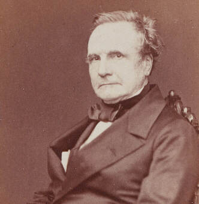

Charles Babbage
Father of Computing

Babbage's first calculating machine was the Difference Engine, which created tables of values by finding the common difference between terms in the sequence. Until the creation of the Difference Engine, calculations were completed manually, which made them prone to error. The Difference Engine could not store data or instructions.
 Following the creation of the Difference Engine, Babbage conceived the Analytical Engine. Even though he never actually built it, the Analytical Engine pioneered the concept of memory storage and the processor. The Analytical Engine was capable of performing calculations and store instructions which made it revolutionary for its time.
Following the creation of the Difference Engine, Babbage conceived the Analytical Engine. Even though he never actually built it, the Analytical Engine pioneered the concept of memory storage and the processor. The Analytical Engine was capable of performing calculations and store instructions which made it revolutionary for its time.